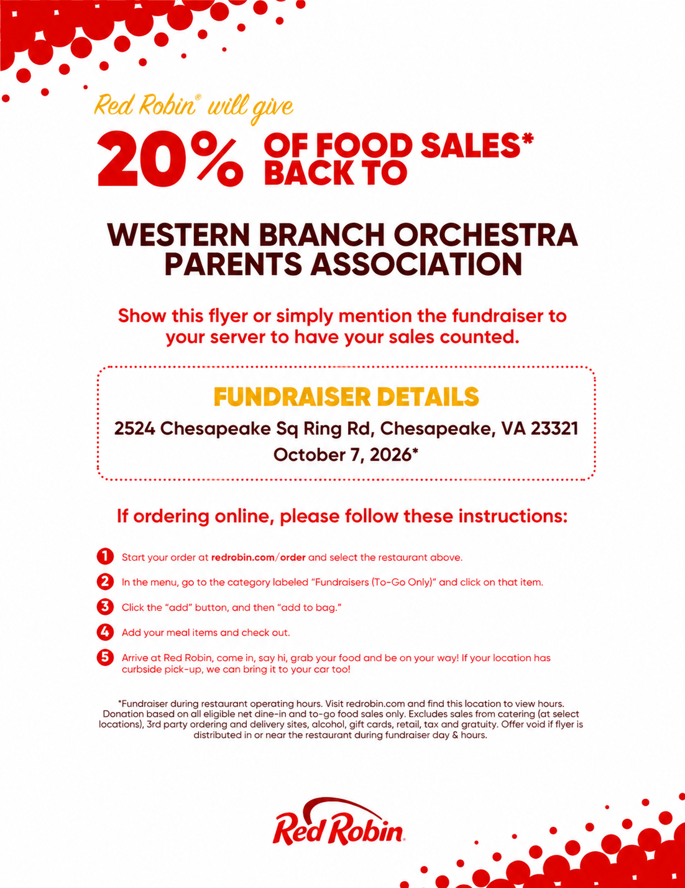

Donation Amount
$10
Checkout Total: $10.66
Includes an amount intended to offset online payment processing costs.
Donate $10Western Branch Orchestras Parents Association
Help us provide instruments, music, performances, educational experiences, and opportunities for Western Branch High School and Jolliff Middle School orchestra students.
Choose a donation amount below to support our programs. Each option opens a secure Square checkout.
Payment information: The displayed checkout total includes an additional amount intended to offset Square's online processing cost. The amount shown is the total you will pay. Square processes payments securely.
Why Fundraising Matters
WBOPA fundraising helps provide additional support for orchestra students, directors, performances, activities, trips, supplies, and special opportunities.
Every purchase, volunteer effort, and contribution helps strengthen the orchestra experience for students at Western Branch High School and Jolliff Middle School.
Fundraising also helps provide experiences that may not otherwise be possible. Last year, WBOPA helped fund a performance by the professional Ivalas Quartet for the Jolliff Middle School orchestra program.
Another professional quartet through the Virginia Arts Festival is scheduled to perform for Jolliff Orchestra students in November 2026.
Support Options
Choose the option that works best for you.
Donate
Financial contributions help WBOPA continue supporting student opportunities and orchestra programs.
Donate NowSpring 2027
Another flower fundraiser is planned for Spring 2027. Details will be posted when available.
Future FundraisersCompleted October 7
Thank you to everyone who supported the October 7 Red Robin Giveback Fundraiser. The event raised $371.27 for WBOPA.
View Completed FundraiserCompleted October 10
Thank you to everyone who supported the Fall 2026 Flower Sale.
View Flower Sale DetailsCompleted October 7
Thank you to everyone who participated in the October 7 Red Robin Giveback Fundraiser. Together, the event raised $371.27 to support Western Branch orchestra students.

Fundraiser Complete
The Red Robin Giveback Fundraiser was held on Wednesday, October 7, 2026.
Red Robin offered to give 20% of eligible food sales back to the Western Branch Orchestras Parents Association for qualifying orders made during the fundraiser.
Thanks to everyone who participated, WBOPA earned $371.27.
Date:
Wednesday, October 7, 2026
Location:
Red Robin
2524 Chesapeake Sq Ring Rd
Chesapeake, VA 23321
Amount Raised:
$371.27
Status:
Completed
Completed October 10
Thank you to everyone who supported the Fall 2026 Flower Sale. Ordering and pickup have concluded.

Fall 2026
The Fall 2026 ordering period is closed.
Order Deadline:
Tuesday, October 6, 2026
Plant Pickup:
Saturday, October 10, 2026
8:45 a.m. to 11:00 a.m.
Pickup Location:
Western Branch High School Bus Ramp
1968 Bruin Place
Chesapeake, VA 23321
Flower Sale Details
Reference information for the completed Fall 2026 Flower Sale.
Customer Pickup
Customer pickup was scheduled from 8:45 a.m. to 11:00 a.m.
Location
1968 Bruin Place
Chesapeake, VA 23321
Prearranged Delivery
Customers who selected and paid for local delivery when placing their order should follow the arrangements provided with their order.
The optional delivery service was limited to the 23321 ZIP code and one address per order form.
Thank You, Volunteers
Thank you to the students and parents who helped with the Fall 2026 Flower Sale.
Volunteer Shift
Volunteers helped receive, organize, and prepare plants for customer pickup.
Volunteer Shift
Volunteers helped organize and distribute plants as families arrived.
Students
Students who participated may be able to receive credit for service hours.
Students should confirm eligibility with the school or organization requiring the hours.
WBOPA Volunteer Opportunity
WBOPA is looking for someone interested in learning how the flower fundraiser is organized and managed.
The current flower coordinator has managed the fundraiser for several years and is ready to pass the responsibility to another volunteer.
A new volunteer can learn from the current coordinator in preparation for the Spring 2027 Flower Sale.
Contact WBOPA if you would like to help coordinate the Spring Flower Sale.
Contact WBOPAQuestions
Questions about flower orders, pickup, delivery, or the Fall Flower Sale can be directed to the flower sale coordinator.
Fundraising Goal
Families can support WBOPA through direct donations and future fundraising opportunities.
WBOPA fundraising supports the Western Branch orchestra programs through scholarships, student participation fees, music and equipment purchases, staff development, and other orchestra activities.
Fundraising also allows orchestra directors to provide special experiences for students.
For example, WBOPA previously funded a visit by the Ivalas Quartet, a professional string quartet participating in a Virginia Arts Festival residency, to perform for the Jolliff Middle School orchestra program.
Another professional quartet through the Virginia Arts Festival is scheduled to visit Jolliff in November 2026.
Orders Closed
The Fall 2026 Jolliff Orchestra spirit wear ordering period has closed.
The order deadline was Thursday, October 1, 2026.
Spirit wear order forms were distributed to 6th grade orchestra students and interested 7th and 8th grade students.
The current designs are the same as last year and remain available to view below.
Fall 2026 orders are closed.
Future spirit wear ordering information will be posted when another ordering period becomes available.
Families with questions about an existing order should contact the orchestra program or WBOPA.
Direct Support
Your gift helps WBOPA support orchestra students, directors, performances, activities, instruments, sheet music, and other program needs.
Select an amount below to open Square's secure checkout. The checkout total includes an amount intended to cover online payment processing costs.
These links are for supporting WBOPA orchestra programs. They are not for purchasing raffle tickets.
Scan the QR code to open our fundraising page, where you can choose one of the four donation amounts.
Scan with your phone camera to select a donation amount.
Throughout the Year
Additional opportunities may be offered throughout the school year to support orchestra activities and student experiences.
Spring 2027
Our spring flower fundraiser provides another opportunity for families and the community to support orchestra students.
Spring 2027 fundraiser information will be posted later this school year.
Concerts
WBOPA may hold raffles during select concerts and orchestra events.
Details will be announced before participating events.
Special Events
Additional fundraising activities may be offered throughout the year to support student opportunities and orchestra programs.
New opportunities will be posted here.
Where Your Support Goes
Funds raised through WBOPA help support Western Branch High School and Jolliff Middle School orchestra students.
Fundraising supports activities, performances, trips, supplies, student opportunities, and other program needs.
Every purchase, contribution, and volunteer effort helps provide meaningful experiences for student musicians.
Contact WBOPA with questions about fundraisers, orders, volunteering, or other ways to support orchestra students.
Contact WBOPA